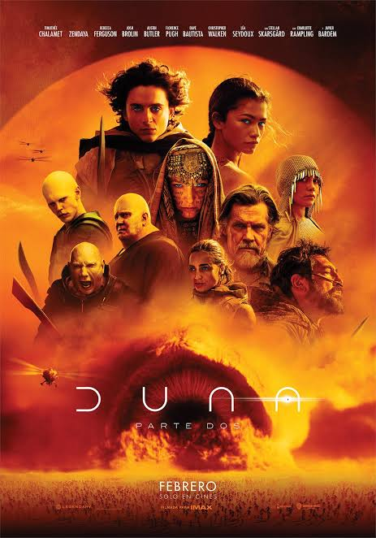

Kevin Zúniga
Edad: 20 años
Cédula: 20-53-8550
Mi nombre es Kevin Zúniga tengo 20 años, estudio la carrera de licenciatura en gestion y desarrollo de software. Mis hobbies son ver deportes, hacer ejercicio y ver peliculas.

Mi tema de interés
Tipo: Película
Nombre: Dune 2
Año: 2024
Es una película de ciencia ficción dirigida por Denis Villeneuve y estrenada en 2024. La historia continúa siguiendo a Paul Atreides, quien se une a los Fremen mientras busca vengar la muerte de su familia y enfrentarse a sus enemigos.La película destaca por sus impresionantes efectos visuales, escenarios y escenas de acción, además de desarrollar más profundamente a sus personajes y el conflicto político de Arrakis. En general, Dune: Parte Dos es una película emocionante y visualmente espectacular que combina ciencia ficción, acción y drama de una manera muy atractiva.